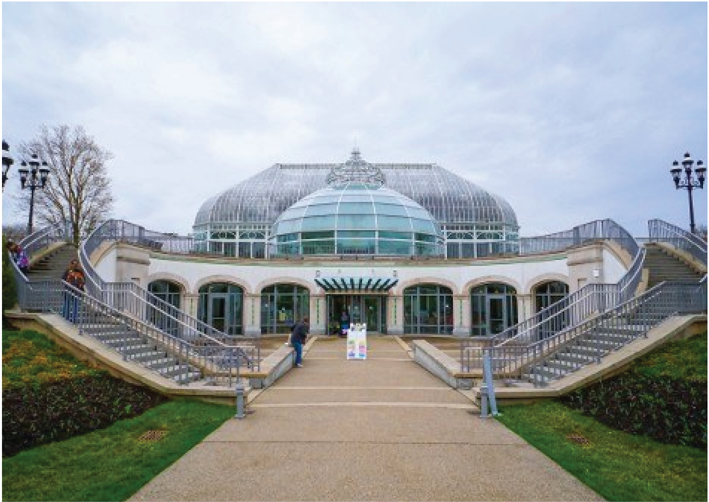

Phipps Conservatory
Team
- Natalya Buchwald
- Ally Sorge
- Johnny Wu
Opportunity
One of PRC’s services to the community is hosting the Recycling Hotline for the Pennsylvania Department of Environmental Protection. PRC receives calls from citizens across the state asking for recycling information on a variety of different items. This process requires data to be managed in two places: searching for a location near the caller where the item can be recycled and tracking caller information. The main problems in their previous process was that: (1) PRC’s information was stored in Excel spreadsheets making searching through their data hard to manage (2) The recycling locations are ever-changing and there was no indication of when data was last verified (3) Tracking calls and lookups both were two separate processes that used the same information, but required PRC to do double the work for each call.
Outcomes
The most important outcome is the climate change knowledge-base of the general Phipps visitor. After gaining environmental knowledge from our game, our program will store the accuracy and time of each trivia question answered. Eventually, our program will have the ability to determine if the climate change knowledge based of the general visitor has improved over time. Secondly, our team comprehensively tested our game’s interactivity and engagement level with over fifty people. We hosted one round of employee visitor tests to engage the Phipps staff base in our project. Afterwards, we conducted three rounds of on-site visitor tests to see our solution in context. These tests were crucial in our development and perfected our game’s user experience. Furthermore, another outcome is our game’s sustainability. Through our thoroughly collaborative process, our clients at Phipps have a firm grasp on how to continue to expand our team’s creation. There are opportunities for more trivia questions and visual graphics to account for the growing climate change research.
Deliverables
Our team will provide our client the fully deployed game. We also will provide full access to the repository, currently located on GitHub and Heroku. This access will allow our client to sustain the long-term relevance of our program. Lastly, our team will provide a clear and detailed tutorial on how to sustain our program, including how to create and edit content for the game